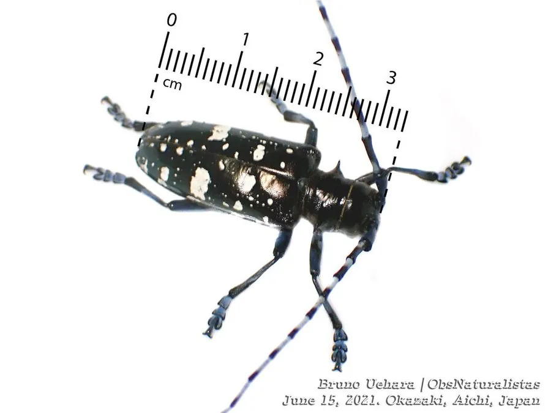

昆虫 · 动物界
光肩星天牛 Anoplophora glabripennis

鞘翅有白色星斑、前胸背板光滑的大型天牛，幼虫蛀食杨树和柳树等，是国际著名的检疫性蛀干害虫。
- 分类
- 门节肢动物门纲昆虫纲目鞘翅目科天牛科属星天牛属
- 栖息环境
- 杨树、柳树等阔叶林地与城市绿化带，幼虫在树干内
- 地理分布
- 原产中国和朝鲜半岛，已传入北美和欧洲
- 保护级别
- 暂无评估；国际检疫性害虫
物种志
光肩星天牛成虫体长约 2–3.5 cm，体黑色有光泽，鞘翅上有不规则的白色斑点，前胸背板两侧有刺突，肩部光滑无颗粒，因此得名光肩；触角很长，雄虫触角超过体长。幼虫乳白色，头部褐色，蛀入树干取食。
它主要危害杨树、柳树、榆树、枫树等阔叶树，幼虫在树干内蛀食，形成蛀道并排出木屑，严重时树干中空、枝干折断。光肩星天牛原产中国和朝鲜半岛，随木材和包装材料贸易传入北美和欧洲，被列为国际检疫性害虫。防治以严格检疫、清除虫源木、树干注药和释放天敌为主，城市绿化中要避免种植单一易感树种，减少其扩散机会。
形态与习性
- 食性幼虫蛀食树干木质部；成虫啃食树皮和嫩枝
- 体长成虫约 2–3.5 cm
- 识别鞘翅有白色星斑，肩部光滑无颗粒
- 入侵随木材贸易传入北美和欧洲，被列为检疫性害虫
- 防治严格检疫、清除虫源木、树干注药和释放天敌
趣味知识
- 光肩星天牛肩部光滑无颗粒，是它与星天牛的重要区别。
- 它随木材和包装材料贸易传入欧美，成为国际检疫对象。
- 城市绿化中种植单一树种，容易让光肩星天牛大面积暴发。